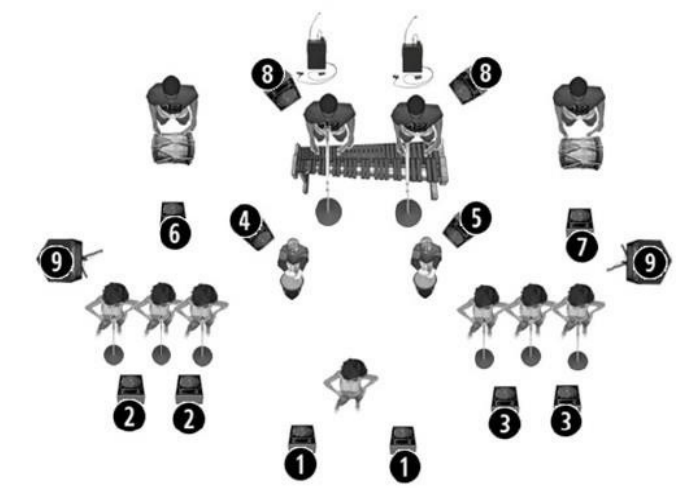

Documento técnico de producción
Rider Técnico
Sonidos Profundos de Colombia — Agrupación Musical del Pacífico Colombiano
¿Qué es esto?
¿Qué es el Rider Técnico?
El Rider Técnico es el documento que Sonidos Profundos de Colombia entrega al promotor o al equipo de producción de un evento antes de cada presentación. En él se detallan todos los requerimientos necesarios para que el espectáculo se realice con la calidad de sonido, iluminación y logística que exige la agrupación: dimensiones y montaje de la tarima, sistema de sonido y monitores, input list de micrófonos, stage plot, iluminación, electricidad, camerino, catering, transporte y hospedaje. Sirve como guía técnica para que el lugar de la presentación llegue preparado con el equipo y las condiciones correctas.
¿Quieres ver también la biografía, palmares, discografía e integrantes completos de la agrupación?
Descargar portafolio en PDFEl contenido del presente documento será examinado por el promotor y/o sus encargados de producción, para acordar con Sonidos Profundos cada uno de los puntos de la propuesta. Si la producción del artista es notificada al llegar al sitio de posibles problemas técnicos que afecten la realización del espectáculo, no podremos garantizar que el espectáculo se realice.
Si tiene alguna duda respecto a este Rider Técnico, por favor contáctenos con diez (10) días de anticipación a la presentación.
Este Rider Técnico es parte integral del contrato y queda sujeto a cambios según las necesidades de la agrupación, el tamaño del lugar y las condiciones de cada fecha. Solo el equipo de producción de Sonidos Profundos tiene la facultad de autorizar modificaciones. El promotor debe notificar y solicitar confirmación del representante de la agrupación en caso de cambios de cantidades, marcas o modelos.
Personal técnico requerido
- 01 técnico local asistente para FOH / Monitores
- 01 técnico local asistente de iluminación
Prueba de sonido
Load-in de 50 minutos. La prueba de sonido se efectúa mínimo 6 horas antes de la apertura de puertas, con duración aproximada de 2 horas. Es indispensable contar con los equipos de audio en perfecto funcionamiento.
Mientras la banda esté en prueba de sonido, solo estarán en el escenario la banda, su staff, técnicos de sonido, backline y luces. Las puertas de acceso al público permanecerán cerradas durante todo este tiempo.
01
Stage
- Dimensiones8.00 m frente × 6.00 m fondo
- Altura mínima1.20 m
- SuperficieNivelada, color negro en su totalidad
- FrenteTela negra cubriendo el área
- AccesoEscaleras laterales con pasamanos
- Seguridad1 persona y 1 extintor por escalera
- Al aire libreTecho y laterales con lona impermeable + estructura de iluminación

02
Área de house mix
Al frente del escenario, formando un triángulo equilátero con el PA, a una distancia aproximada de 20.00 m a nivel del público. Debe contar con techo y personal de seguridad. No ubicar el FOH en balcones o lugares sin buena percepción del sistema de audio.
Nota: para clubes, bares y discotecas se acuerdan previamente las mejores condiciones, contando con información suficiente (visita al lugar, planos, fotografías, rider, etc.).
03
Front of House
Cobertura homogénea en el venue: 110dB SPL (C Weight) de 35Hz a 18KHz +/- 5dB en el FOH, considerando Front Fill, Out Fill o Delay según el venue.
Sistemas aceptados: Adamson, L'Acoustics, d&b audiotechnik, Meyer Sound, Nexo; arreglo de subwoofer en cardioide. El sistema FOH y de monitores debe estar probado, procesado, alineado en fase y funcionando correctamente una hora antes de la prueba de sonido.
04
Consola de sala y monitores
- MIDAS M32 o YAMAHA QL5
- 01 snake de 32 channels + 16 envíos
- 03 SHURE PSM1000 o 900 con combinador de antena
- 12 monitores de piso 500W (12″ speaker, 2″ driver) o similar en d&b M12, L'Acoustics X12, Meyer
- 01 side fill estéreo con subwoofer
- 01 monitor activo en FOH para talkback
Distribución de mezclas
| Mix | Descripción | Monitor | Tipo |
|---|---|---|---|
| 1 | Voz lead | 2 × 12″ | Piso |
| 2 | Cantaoras L | 2 × 12″ | Piso |
| 3 | Cantaoras R | 2 × 12″ (dos sistemas) | Piso |
| 4 | Cununos L | 1 monitor | Piso |
| 5 | Cununos R | 1 monitor | Piso |
| 6 | Bombo L | 1 monitor | Piso |
| 7 | Bombo R | 1 monitor | Piso |
| 8 | Marimba de chonta | 2 monitores | Piso |
| 9 | Marimba de chonta | PSM 900 | In-ears |
| 10 | Stage manager | PSM 900 | In-ears |
| 11 | Side fill L | Witch Sub 15″ | — |
| 12 | Side fill R | Witch Sub 15″ | — |
05
Input list
| Ch | Instrumento | Mic / D.I. | Stand | Posición |
|---|---|---|---|---|
| 1 | Bombo macho | Beta 52 · E602 | Short/Boom | — |
| 2 | Bombo palo macho | Beta 57 · E604 | Boom | — |
| 3 | Bombo hembra | Beta 52 · E602 | Short/Boom | — |
| 4 | Bombo palo hembra | Beta 57 · E604 | Boom | — |
| 5 | Cununo macho | Beta 57 · E604 | Boom | — |
| 6 | Cununo hembra | Beta 57 · E604 | Boom | — |
| 7 | Marimba low | Beta 57 si o sí | Boom | — |
| 8 | Marimba mid L | Beta 57 si o sí | Boom | — |
| 9 | Marimba mid H | Beta 57 si o sí | Boom | — |
| 10 | Marimba high | Beta 57 si o sí | Boom | — |
| 11 | Coro marimba 1 | Beta 58 | Boom | — |
| 12 | Coro marimba 2 | Beta 58 | Boom | — |
| 13–18 | Vox 1–6 | Beta 58 | Boom | — |
| 19 | Voz lead | ULXD Beta 58 inalámbrico | Boom | Front center |
| 20 | Talkback stage | SM58 on switch | Boom | Stage L |
| 21 | Talkback FOH | ULXD Beta 58 inalámbrico | Boom | FOH |
| 22 | PC L | D.I. | — | — |
| 23 | PC R | D.I. | — | — |
06
Stage plot

07
Iluminación
Moving / Lighting
| PlatinumBeam 16R | 16× |
| PlatinumSpot 12R | 8× |
| Mac 101 | 6× |
Static lighting
| Par Led RGBW 3W | 32× |
| Lekos | 6× |
| Smoker | 2× |
FOH
| GrandMA2 | 1× |
08
Electricidad y camerino
Electricidad
Tres fases, neutro y tierra para sonido, diferente de la de iluminación. El escenario debe tener varios puntos de corriente a 110V debidamente aterrizados, igual que en FOH y monitores.
- 1 planta eléctrica insonora de 75 KWA para sonido
- 1 planta eléctrica insonora de 125 KWA para video e iluminación
- 1 APS regulador eléctrico con batería para 30 min (consola de sala y monitores)
Camerino
Espacio privado ubicado cerca de la tarima, con capacidad suficiente para la permanencia de los integrantes. De uso único y exclusivo para el artista y su equipo.
Catering
Hospitalidad en jornada
Prueba de sonido
- 1 nevera pequeña con hielo
- 30 botellas de agua sin gas, temperatura ambiente
- 30 bebidas cola
- 20 porciones de comida ligera
- 14 toallas pequeñas
2 horas antes del espectáculo
- 30 botellas de agua sin gas, temperatura ambiente (no vasos, no bolsas)
- 20 bebidas cola
- 20 porciones de comida ligera
- 2 bandejas de frutas
- Hielera, hielo, vasos y servilletas
Logística
Transporte y hospedaje
Transporte
Corre por cuenta de la agrupación, quien dispone del vehículo necesario para el desplazamiento de integrantes y equipos de producción al lugar de la presentación o a terminales aéreos. En transporte aéreo, la parte contratante se hace cargo de la reserva y compra de los vuelos.
Hospedaje
El contratista asume los gastos de hospedaje, alimentación, refrigerio e hidratación durante la estancia de la agrupación.
¿Tienes dudas sobre este rider o quieres coordinar una presentación?
Contáctanos